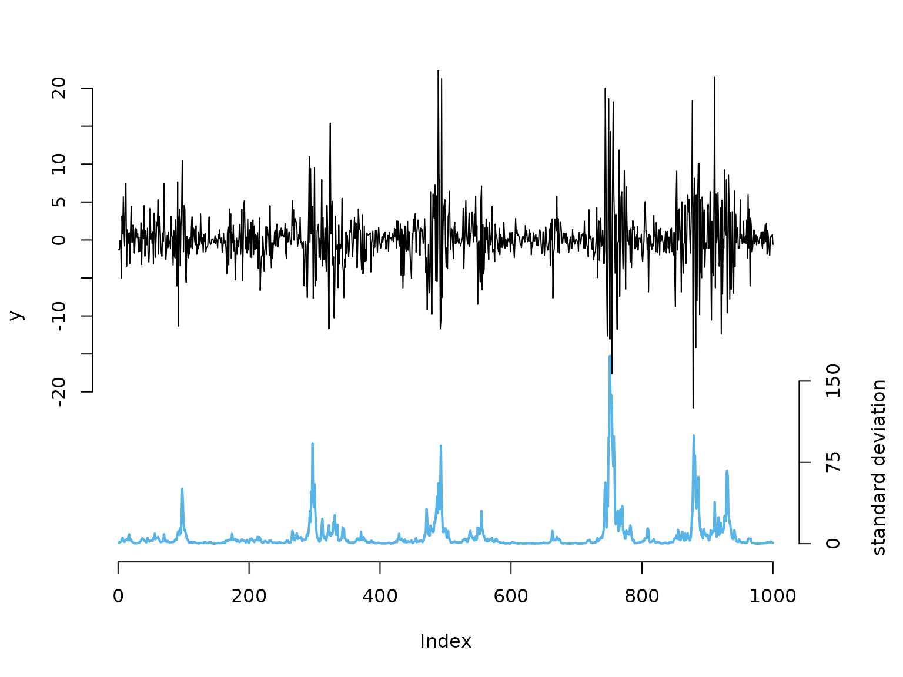
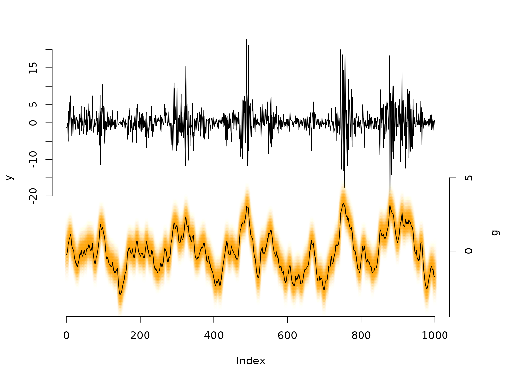

8 State-space models
Jan-Ole Fischer
State_space_models.RmdBefore diving into this vignette, we recommend reading the vignettes Introduction to LaMa and Automatic differentiation via RTMB.
This vignette shows how to fit state-space models which can be interpreted as generalisation of HMMs to continuous state spaces. Several approaches exist to fitting such models, but Langrock (2011) showed that very general state-space models can be fitted via approximate maximum likelihood estimation, when the continuous state space is finely discretised. This is equivalent to numerical integration over the state process using midpoint quadrature.
Here, we will showcase this approach for a basic stochastic volatility model which, while being very simple, captures most of the stylised facts of financial time series. In this model the unobserved marked volatility is described by an AR(1) process:
g_t = \phi g_{t-1} + \sigma \eta_t, \qquad \eta_t \sim N(0,1), with autoregression parameter \phi < 1 and dispersion parameter \sigma. Share returns y_t can then be modelled as y_t = \beta \epsilon_t \exp(g_t / 2), where \epsilon_t \sim N(0,1) and \beta > 0 is the baseline standard deviation of the returns (when g_t is in equilibrium), which implies y_t \mid g_t \sim N(0, (\beta e^{g_t / 2})^2).
Example: stochastic volatility model
Simulating data
We start by simulating data from the above specified model:
beta = 2 # baseline standard deviation
phi = 0.95 # AR parameter of the log-volatility process
sigma = 0.5 # variability of the log-volatility process
n = 1000
set.seed(123)
g = rep(NA, n)
g[1] = rnorm(1, 0, sigma / sqrt(1-phi^2)) # stationary distribution of AR(1) process
for(t in 2:n){
# sampling next state based on previous state and AR(1) equation
g[t] = rnorm(1, phi*g[t-1], sigma)
}
# sampling zero-mean observations with standard deviation given by latent process
y = rnorm(n, 0, beta * exp(g/2))
# share returns
color = LaMaColors(2)
oldpar = par(mar = c(5,4,3,4.5)+0.1)
plot(y, type = "l", bty = "n", ylim = c(-40,20), yaxt = "n")
# true underlying standard deviation
lines(beta*exp(g)/7 - 40, col = color[2], lwd = 2)
axis(side=2, at = seq(-20,20,by=5), labels = seq(-20,20,by=5))
axis(side=4, at = seq(0,150,by=75)/7-40, labels = seq(0,150,by=75))
mtext("standard deviation", side=4, line=3, at = -30)
par(oldpar)Writing the negative log-likelihood function
To calculate the likelihood, we need to integrate over the state
space. We approximate this high-dimensional integral using a midpoint
quadrature which ultimately results in a fine discretisation of the
continuous state space into the intervals b with width
h and midpoints bstar (Langrock
2011). Thus, the likelihood below corresponds to a basic HMM
likelihood with a large number of states.
nll = function(par) {
getAll(par, dat)
phi = plogis(logit_phi); REPORT(phi)
sigma = exp(log_sigma); REPORT(sigma)
beta = exp(log_beta); REPORT(beta)
b = seq(-bm, bm, length = m + 1) # intervals for midpoint quadrature
h = b[2] - b[1] # interval width
bstar = (b[-1] + b[-(m+1)]) / 2 # interval midpoints
# approximating t.p.m. via midpoint quadrature
Gamma = sapply(bstar, dnorm, mean = phi * bstar, sd = sigma) * h
# stationary distribution of the AR(1) process: g ~ N(0, sigma^2/(1-phi^2))
delta = h * dnorm(bstar, 0, sigma / sqrt(1 - phi^2))
# state-dependent densities: y_t | g_t ~ N(0, (beta * exp(g_t/2))^2)
allprobs = t(sapply(y, dnorm, mean = 0, sd = beta * exp(bstar / 2)))
-forward(delta, Gamma, allprobs)
}Fitting an SSM to the data
Because the transition matrix \Gamma
is 100 \times 100 and dense, we set
TapeConfig(matmul = "atomic") before building the AD
objective.
By default ("plain"), RTMB unwraps every
matrix multiplication into all its individual scalar operations on the
tape. This is efficient when matrices are sparse, since the tape can
exploit the structure. For large, dense matrices it produces an enormous
tape — one scalar entry per element of the result — which slows both
tape construction and subsequent gradient evaluation.
Declaring matrix multiplications as atomic treats
each one as a single operation on the tape, keeping it compact
regardless of matrix size. If your transition matrix were sparse — for
example in models with local state dependence — the default
"plain" setting would be preferable.
TapeConfig(matmul = "atomic")
bm = 5 # truncation of state space at ±bm
m = 100 # number of quadrature points
par = list(
logit_phi = qlogis(0.95),
log_sigma = log(0.3),
log_beta = log(1)
)
dat = list(y = y, bm = bm, m = m)
obj = MakeADFun(nll, par, silent = TRUE)
system.time(
opt <- nlminb(obj$par, obj$fn, obj$gr)
)
#> user system elapsed
#> 0.557 0.000 0.558
mod = report(obj)Results
mod$phi # true: 0.95
#> [1] 0.951655
mod$sigma # true: 0.5
#> [1] 0.4436881
mod$beta # true: 2
#> [1] 2.18407
## decoding states
b = seq(-bm, bm, length = m + 1)
h = b[2] - b[1]
bstar = (b[-1] + b[-(m+1)]) / 2
Gamma = sapply(bstar, dnorm, mean = mod$phi * bstar, sd = mod$sigma) * h
delta = h * dnorm(bstar, 0, mod$sigma / sqrt(1 - mod$phi^2))
allprobs = t(sapply(y, dnorm, mean = 0, sd = mod$beta * exp(bstar / 2)))
probs = stateprobs(delta, Gamma, allprobs) # local/soft decoding
states = viterbi(delta, Gamma, allprobs) # global/hard decoding
oldpar = par(mar = c(5,4,3,4.5)+0.1)
plot(y, type = "l", bty = "n", ylim = c(-50,20), yaxt = "n")
# with many states, plotting the full conditional distribution is more informative
# than just the single most-probable state
maxprobs = apply(probs, 1, max)
for(t in 1:nrow(probs)){
colend = round((probs[t,] / (maxprobs[t] * 5)) * 100)
colend[which(colend < 10)] = paste0("0", colend[which(colend < 10)])
points(rep(t, m), bstar * 4 - 35, col = paste0("#FFA200", colend), pch = 20)
}
# Viterbi-decoded path as a summary line
lines(bstar[states] * 4 - 35)
axis(side = 2, at = seq(-20, 20, by = 5), labels = seq(-20, 20, by = 5))
axis(side = 4, at = seq(-5, 5, by = 5) * 4 - 35, labels = seq(-5, 5, by = 5))
mtext("g", side = 4, line = 3, at = -30)
par(oldpar)Comparison to Laplace approximation
An alternative way to marginalise over the continuous state process
is the Laplace approximation, available in
RTMB via the random argument of
MakeADFun(). Instead of discretising the state space, we
write the joint negative log-likelihood — the negative
log of the joint density of observations and states — and declare the
state sequence g_1, \dots, g_T as
random effects. RTMB then integrates them out automatically
using the Laplace approximation.
For the stochastic volatility model the joint negative log-likelihood is
-\ell(\theta,\, g_{1:T}) = -\log f(g_1) - \sum_{t=2}^T \log f(g_t \mid g_{t-1}) - \sum_{t=1}^T \log f(y_t \mid g_t),
where g_1 \sim N(0,\, \sigma^2/(1-\phi^2)), g_t \mid g_{t-1} \sim N(\phi g_{t-1},\, \sigma^2), and y_t \mid g_t \sim N(0,\, (\beta e^{g_t/2})^2).
jnll = function(par) {
getAll(par, dat)
phi = plogis(logit_phi); REPORT(phi)
sigma = exp(log_sigma); REPORT(sigma)
beta = exp(log_beta); REPORT(beta)
jnll = 0
# stationary initial distribution: g_1 ~ N(0, sigma^2 / (1 - phi^2))
jnll = jnll - dnorm(g[1], 0, sigma / sqrt(1 - phi^2), log = TRUE)
# AR(1) state transitions: g_t | g_{t-1} ~ N(phi * g_{t-1}, sigma^2)
jnll = jnll - sum(dnorm(g[-1], phi * g[-length(g)], sigma, log = TRUE))
# observations: y_t | g_t ~ N(0, (beta * exp(g_t / 2))^2)
jnll = jnll - sum(dnorm(y, 0, beta * exp(g / 2), log = TRUE))
jnll
}The state sequence g is included in the parameter list
and declared as random — MakeADFun()
marginalises over it internally.
dat = list(y = y)
par_lap = list(
logit_phi = qlogis(0.95),
log_sigma = log(0.3),
log_beta = log(1),
g = rep(0, n) # random effects initialised at zero
)
obj_lap = MakeADFun(jnll, par_lap, random = "g", silent = TRUE)
system.time(
opt_lap <- nlminb(obj_lap$par, obj_lap$fn, obj_lap$gr)
)
#> user system elapsed
#> 0.225 0.302 0.186
mod_lap = report(obj_lap)
mod_lap$phi # true: 0.95
#> [1] 0.9525517
mod_lap$sigma # true: 0.5
#> [1] 0.4348222
mod_lap$beta # true: 2
#> [1] 2.182106The Laplace approach is typically faster because it avoids the expensive m \times m matrix operations of the discretisation: for a Markov state process the Hessian of the random-effect log-posterior is tridiagonal, so each Laplace step costs O(T) rather than O(m^2 T).
Comparing the two sets of estimates, \hat{\phi} and \hat{\sigma} differ slightly between the two approaches — only at the third decimal place here, and with a single dataset we cannot distinguish approximation error from ordinary sampling variation. In general, however, the Laplace approximation is not exact: it is only exact when the random-effect posterior is truly Gaussian given the fixed parameters, which is never strictly the case because \phi and \sigma enter the likelihood in a nonlinear way. Systematic discrepancies can grow substantially for non-Gaussian state processes such as Markov-switching autoregressive models, or for strongly non-Gaussian conditional distributions such as Bernoulli observations, where the posterior over g is multimodal or strongly skewed.
The discretisation approach makes no such assumption: increasing
m reduces the quadrature error at the cost of computation
time, giving full control over the approximation quality.